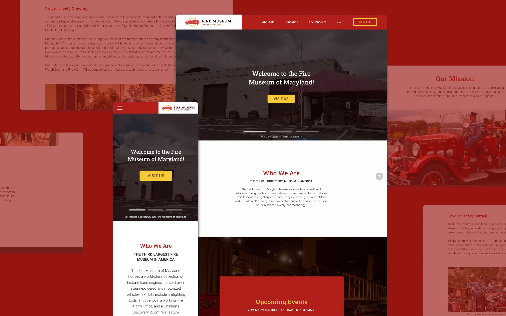
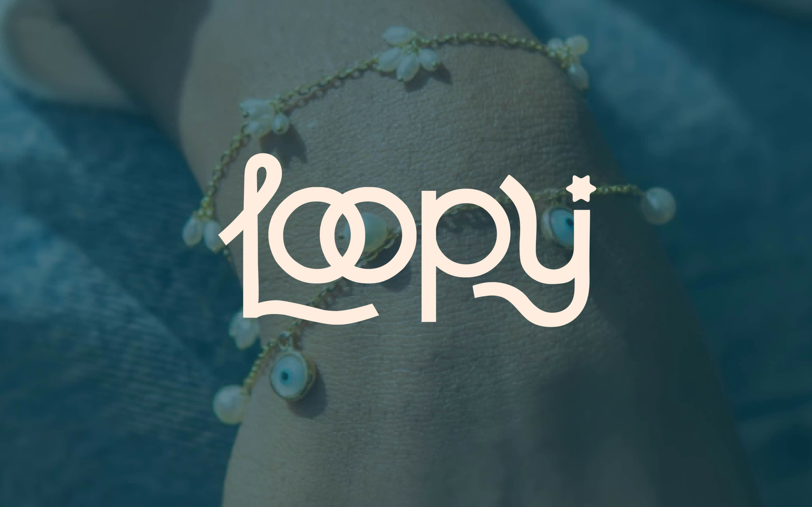

Brand Identity
Restaurant
Nuestra Casita
Conceptualizing a brand identity and deliverables for a friendly, homey, and authentic Mexican family restaurant

Brand Identity
Museum
Non-Profit Rebrand
Revamping a museum's brand identity to effectively cater to their audience's needs and amplify the brand's value
Product Design
UX/UI
Case Study
MOCO Recycling
Designing an app to help Montgomery County residents improve the garbage-disposal and recycling process in the area

Brand Identity
Jewelry
Loopy
Designing a playful yet professional brand identity for small handmade jewelry business that values joyful self-expression
Product Design
UX/UI
Case Study
Revival
Creating an app to provide students and professionals with a resource to combat imposter syndrome

Visual Identity
Innovate Tech Conference
Designing the visual identity for Innovate 2022, a premier tech conference held at the Silicon Valley Convention Center